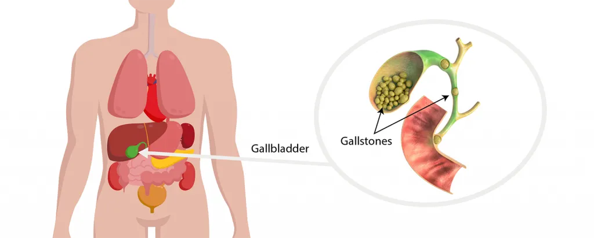
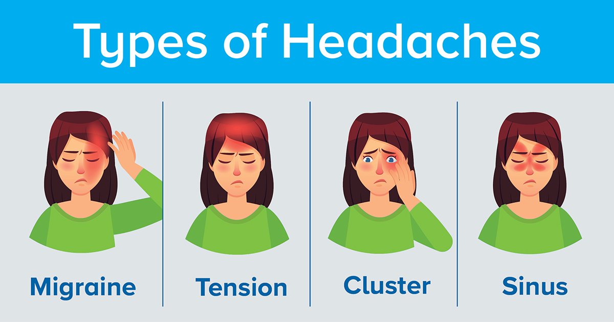
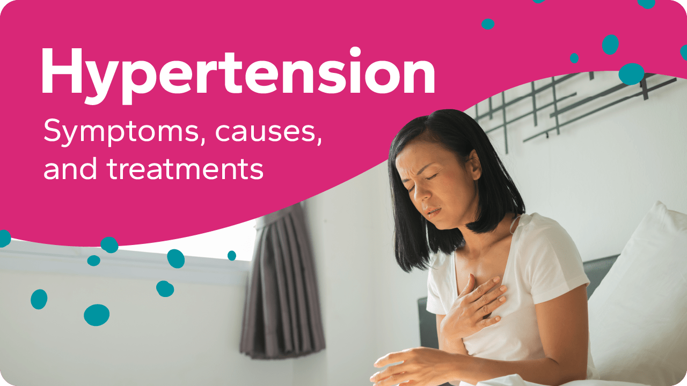
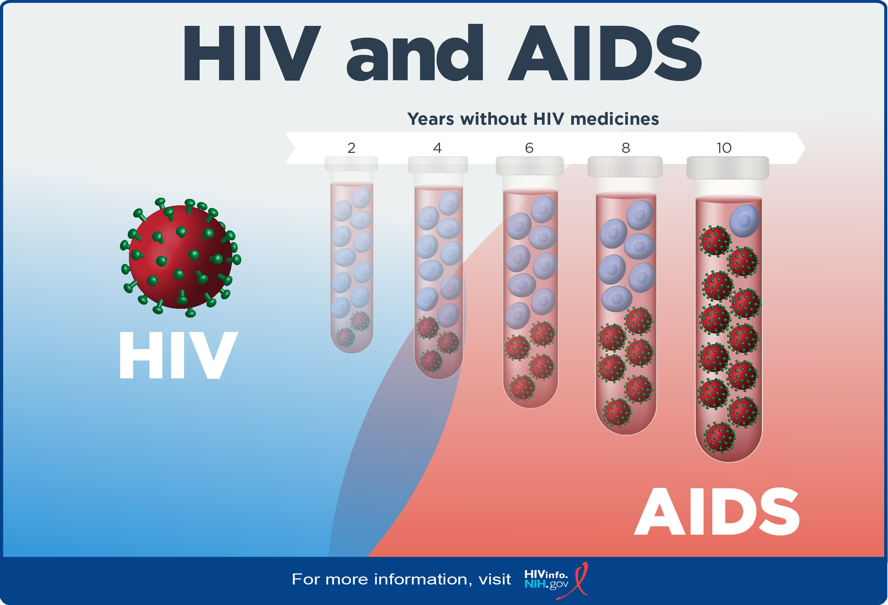
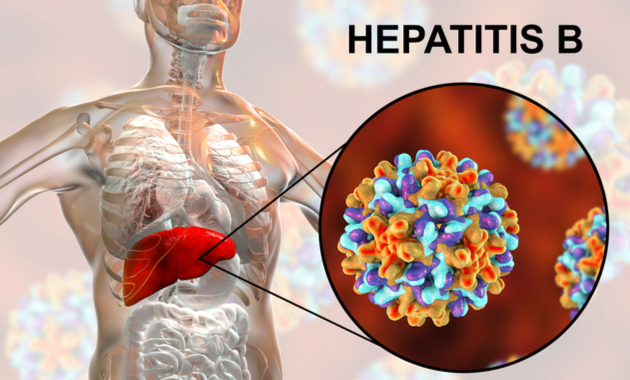

Gallstones
- About: Hardened deposits in the gallbladder.
- Symptoms: Pain in right abdomen, nausea, vomiting.
- Do's: Follow low-fat diet, take medications if advised.
- Don'ts: Avoid fatty and fried food.
- Precautions: Maintain healthy weight and balanced diet.
- Concern: Persistent abdominal pain, fever with pain.

Headache
- About: Pain or discomfort in the head or upper neck.
- Symptoms: Dull, sharp, or throbbing pain; sensitivity to light or sound.
- Do's: Rest in a quiet room, stay hydrated, use cold compress.
- Don'ts: Avoid screen time or loud environments during headache.
- Precautions: Reduce stress, maintain sleep schedule, eye checkups.
- Concern: Frequent headaches or very severe pain suddenly.

Hypertension (High Blood Pressure)
- About: High blood pressure, increasing heart disease risk.
- Symptoms: Often no symptoms, sometimes headaches or vision changes.
- Do's: Monitor BP, exercise regularly.
- Don'ts: Avoid high-salt foods and stress.
- Precautions: Healthy diet, medication if prescribed.
- Concern: Persistent high BP or complications.

HIV/AIDS
- About: Virus that weakens the immune system over time.
- Symptoms: Weight loss, fatigue, fever, infections.
- Do's: Take antiretroviral meds regularly, maintain hygiene.
- Don'ts: Avoid unprotected sex and sharing needles.
- Precautions: Safe sex, regular testing, awareness.
- Concern: After risky exposure or symptoms persist.

Hepatitis B
- About: Viral infection affecting the liver.
- Symptoms: Jaundice, fatigue, dark urine, abdominal pain.
- Do's: Get vaccinated, avoid alcohol, follow up with doctor.
- Don'ts: Don’t share needles or razors.
- Precautions: Safe sex, avoid infected blood exposure.
- Concern: Jaundice or suspected liver issues.